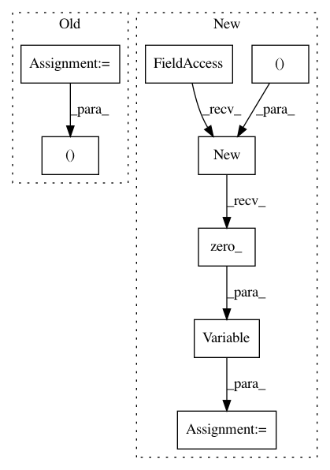

a7a5cdc598afd6afa3d0e9d355360bebc4947c29,snli/model.py,Encoder,forward,#Encoder#Any#,29
Before Change
batch_size = inputs.size()[1]
h0 = Variable(torch.zeros(self.config.n_cells, batch_size, self.config.d_hidden)).cuda()
c0 = Variable(torch.zeros(self.config.n_cells, batch_size, self.config.d_hidden)).cuda()
_, (hn, _) = self.rnn(inputs, (h0, c0))
return hn[-1] if not self.config.bidirectional else hn[-2:].view(batch_size, -1)
After Change
def forward(self, inputs):
batch_size = inputs.size()[1]
state_shape = self.config.n_cells, batch_size, self.config.d_hidden
h0 = c0 = Variable(inputs.data.new(*state_shape).zero_())
outputs, (ht, ct) = self.rnn(inputs, (h0, c0))
return ht[-1] if not self.config.birnn else ht[-2:].view(batch_size, -1)
In pattern: SUPERPATTERN
Frequency: 3
Non-data size: 8
Instances
Project Name: pytorch/examples
Commit Name: a7a5cdc598afd6afa3d0e9d355360bebc4947c29
Time: 2017-01-24
Author: bryan.mccann.is@gmail.com
File Name: snli/model.py
Class Name: Encoder
Method Name: forward
Project Name: OpenNMT/OpenNMT-py
Commit Name: 26de350ba308d7bb88d06ee9a317e36a157e7e4c
Time: 2017-09-10
Author: nasa4836@gmail.com
File Name: onmt/Models.py
Class Name: RNNDecoderState
Method Name: __init__